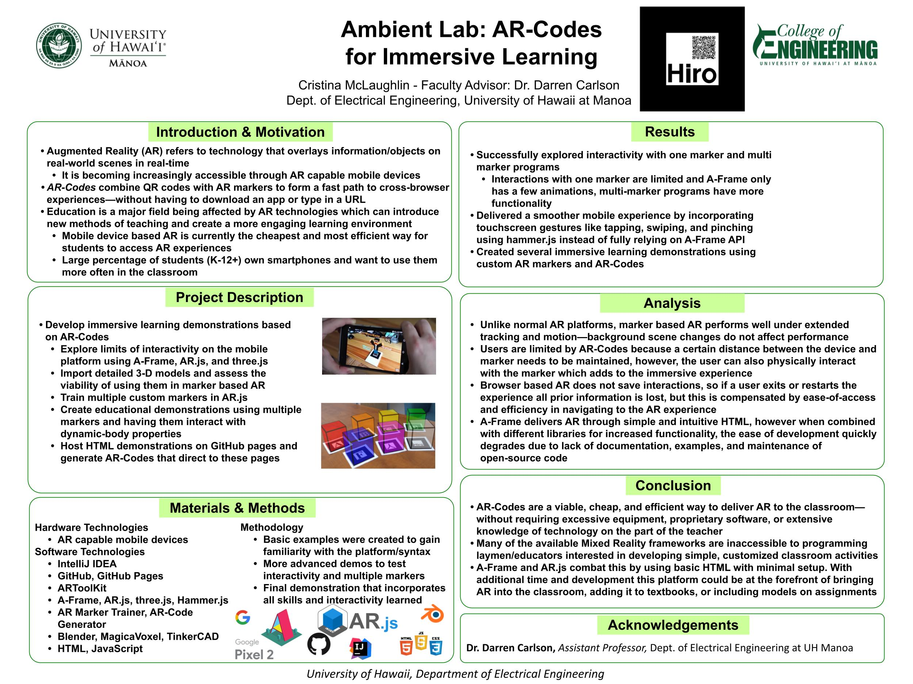

<div id="ajax-page" class="ajax-page-content">
    <div class="ajax-page-wrapper">
        <div class="ajax-page-nav">
            <div class="nav-item ajax-page-prev-next">
                <a class="ajax-page-load" href="portfolio-2.html"><i class="lnr lnr-chevron-left"></i></a>
                <a class="ajax-page-load" href="portfolio-1.html"><i class="lnr lnr-chevron-right"></i></a>
            </div>
            <div class="nav-item ajax-page-close-button">
                <a id="ajax-page-close-button" href="#"><i class="lnr lnr-cross"></i></a>
            </div>
        </div>

        <div class="ajax-page-title">
            <h1>AR Codes for Immersive Learning</h1>
        </div>

        <div class="row">
            <div class="col-sm-8 col-md-8 portfolio-block">
                <div class="owl-carousel portfolio-page-carousel">

                    <div class="item">
                        <video width = "700" height="600" controls>
                            <source src="img/portfolio/welcome.MP4" type="video/mp4">
                        </video>
                    </div>

                    <div class="item">
                        <video width = "700" height="600" controls>
                            <source src="img/portfolio/sphere.MP4" type="video/mp4">
                        </video>
                    </div>

                    <div class="item">
                        <video width = "700" height="600" controls>
                            <source src="img/portfolio/blocks.MP4" type="video/mp4">
                        </video>
                    </div>

                    <div class="item">
                        
                    </div>
                </div>

                <div class="portfolio-page-video embed-responsive embed-responsive-1by1">
                  <iframe class="embed-responsive-item" src="img/portfolio/report.pdf"></iframe>
                </div>

                <script type="text/javascript">
                    jQuery(document).ready(function($){
                        $('.portfolio-page-carousel').imagesLoaded(function(){
                            $('.portfolio-page-carousel').owlCarousel({
                                smartSpeed:1200,
                                items: 1,
                                loop: true,
                                dots: true,
                                nav: true,
                                navText: false,
                                margin: 10,
                                autoHeight:true
                            });
                        });
                    });
                </script>
            </div>

            <div class="col-sm-4 col-md-4 portfolio-block">
                <!-- Project Description -->
                <div class="project-description">
                    <div class="block-title">
                        <h3>Description</h3>
                    </div>
                    <ul class="project-general-info">
                        <li><p><i class="fa fa-calendar"></i>May 2, 2019</p></li>
                    </ul>

                    <p class="text-justify">This was my senior capstone project. he capabilities of AR.js and A-Frame which are libraries we used to render AR objects on markers. Markers are typically black and white squares or images used so that the AR software can understand where to place objects. We were able to modify our markers to include QR codes that would take users directly to the AR webpage, there the user would just have to allow access to their phone camera to see the AR object. We called these markers “AR-Codes”.</p>
                    <p>We also implemented multiple markers to render several AR objects at once. This consisted of training the software to read our custom markers and understanding why some of them failed while others worked great. Simple icons composed of black and white were far more successful because the encoding is more straightforward as opposed to detailed images or words. Suprisingly, the performance did not decrease at all with 10 markers in the same scene.</p>
                    <!-- /Project Description -->

                    <!-- Technology -->
                    <div class="tags-block">
                        <div class="block-title">
                            <h3>Topics</h3>
                        </div>
                        <ul class="tags">
                            <li><a>HTML5</a></li>
                            <li><a>AR</a></li>
                            <li><a>QR Codes</a></li>
                            <li><a>Ajax</a></li>
                        </ul>
                    </div>
                    <!-- /Technology -->

                </div>
                <!-- Project Description -->
            </div>
        </div>
    </div>
</div>
